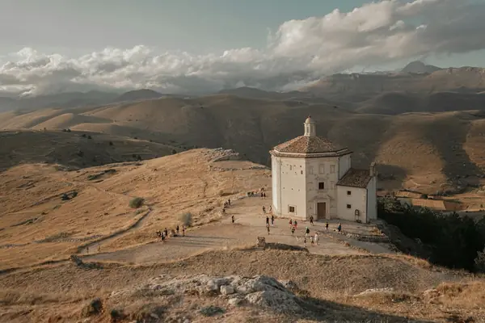

Home › Wine regions › Abruzzo
Abruzzo wine region

Photo: eleonora on Unsplash
Generous reds and an excellent rosé.
Vines grow in all 20 regions. Wines are classed DOCG, DOC and IGT.
CountryItaly
Notable producers in Abruzzo
- Masciarelli
- Valentini
- Emidio Pepe
- Cataldi Madonna
- Zaccagnini
Official appellations
| Appellation | Status | Style | Grapes |
|---|---|---|---|
| Colline Teramane Montepulciano d'Abruzzo (2003) Abruzzo's DOCG for the hills of Teramo province: at least 90% Montepulciano, up to 10% Sangiovese. At least 1 year of ageing; Riserva at least 3 years, 1 of them in wood. | DOCG | Red | Montepulciano, Sangiovese |
| Terre Tollesi (2019) Small DOCG, also labelled Tullum, around the commune of Tollo in the Chieti hills, a few kilometres from the Adriatic coast. Rosso (at least 95% Montepulciano), Pecorino and Passerina (each at least 90%); the Rosso Riserva needs 2 years' ageing including 6 months in wood. Good to know: it is one of Italy's smallest denominations, a DOC from 2008 promoted to DOCG in 2019. | DOCG | Red, White | Montepulciano, Pecorino, Passerina |
| Casauria (2025) Dry red from the Pescara hills in central Abruzzo, inland in the Apennine foothills with vineyards up to 600 m, formerly the Terre di Casauria sub-zone of Montepulciano d'Abruzzo. Made from 100% Montepulciano, with 18 months' ageing before release (24 months for Riserva) and at least 13% alcohol. Good to know: approved by the EU in November 2025, it is Abruzzo's newest DOCG. | DOCG | Red | Montepulciano |
| Abruzzo Region-wide DOC including Pecorino and Passerina. | DOC | White, Red | Pecorino, Montepulciano, Passerina |
| Cerasuolo d'Abruzzo (2010) Deep cherry-pink rosé from Montepulciano. | DOC | Rosé | Montepulciano |
| Controguerra Northern Abruzzo DOC near Teramo. | DOC | White, Red | Montepulciano, Trebbiano |
| Montepulciano d'Abruzzo (1968) Abruzzo's soft, generous red, with sub-zones such as Casauria and Teate. | DOC | Red | Montepulciano |
| Ortona Coastal DOC near Ortona. | DOC | White, Red | Montepulciano, Trebbiano |
| Trebbiano d'Abruzzo (1972) Abruzzo's white, from simple to long-lived classics (Valentini, Emidio Pepe). | DOC | White | Trebbiano Abruzzese |
| Villamagna Small Montepulciano DOC near Chieti. | DOC | Red | Montepulciano |
Abruzzo wines to try
Masciarelli Montepulciano d'Abruzzo
Abruzzo · Montepulciano d'Abruzzo · Montepulciano
Generous and smooth: plum, black cherry and soft spice.
Food: Arrosticini, pizza, pasta with ragù
Masciarelli Cerasuolo d'Abruzzo
Abruzzo · Cerasuolo d'Abruzzo · Montepulciano
Deep cherry-pink Abruzzo rosé: red cherry, herbs and a savoury bite.
Food: Pizza, grilled fish
More wine regions in Italy
TuscanyPiedmontVenetoSicilyAosta ValleyLombardyTrentino-Alto AdigeFriuli-Venezia GiuliaLiguriaEmilia-RomagnaUmbriaMarcheLazioMoliseCampaniaPugliaBasilicataCalabriaSardinia
The Wine Reference newsletter
New wines, stories and career guides, one email a week at most.
Over 18s only. Unsubscribe any time with one click. Your email is stored securely by Kit and never shared.
Support The Wine Reference
This guide is free, with no paywall. If it helped you choose a bottle, you can buy me a glass and keep it growing.
🍷 Buy me a glass